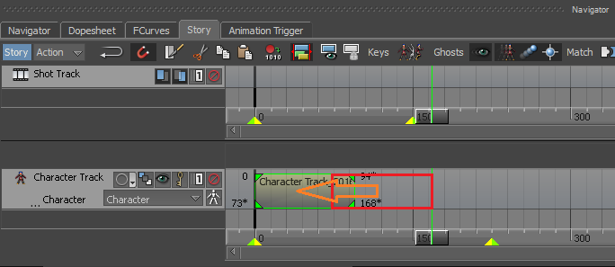

An open space free of obstructions (10ft*10ft recommended, 5ft*5ft minimum)
Once you have gathered all of these parts you are ready to proceed!
Required Software:
A complete list of all the software we will install just as a heads-up. No surprises! (Don't install any of
this yet)
Autodesk Maya 2016 or higher (Can be acquired for free legally by making a student account on Autodesk.com,
more info about this later)
Autodesk MotionBuilder 2016 or higher (make sure to use the same version as Maya!)
Kinect SDK 1.8 (or 2.0 for Xbox One)
Installation and Setup
Download and install the Kinect SDK 1.8 (Do not plug in the Kinect first!)
Run the installer to install the SDK
If you haven't already, create an Autodesk student account by visiting autodesk.com/student
Install the student version of Autodesk MotionBuilder (This guide confirms version 2018 to work).
Install the student version of Maya (make sure you install the same year-version! For example, if you installed MotionBuilder 2018, install Maya 2018.)
Plug your Kinect sensor into any power USB 2.0 or higher port on your computer
Plug the power cable into a wall socket if your Kinect requires a power outlet
Wait while your computer automatically installs any required drivers for your computer. Do not
unplug the Kinect during this process.
Operation Instructions - Setup
Plug in your Kinect and place it approximately 4 feet above the ground and level horizontally. Do
not force the sensor arm backward or forwards! Doing so will damage the motor.
Launch MotionBuilder.
Go to the [Asset Browser], expand the [Templates] folder, and click [Devices]
Drag [Kinect 1.0] onto the 3D grid
Under [Model Binding] click [Create]. A yellow joint skeleton should appear in the view.
Note: for MotionBuilder 2017 or higher, you will need to go to [Characters] -
[MocapDeviceCharacter] in the Templates panel and change [Character Solver] to [MB Character Solver]
Click the Online button and wait until it turns green. If a dialog for voice control pops up, press [No].
The Kinect should auto-level its sensor if necessary.
Under [Setup] click [Setup Recording]. A human male model should appear in the viewport.
[Optional] Delete all of the mesh for the man. You do not need it unless you don't have any rigs to retarget
the motion to. Keep the white skeleton because it is essential.
Click [Calibration], and then [Ok]
Stand about 6 feet away from the Kinect and directly in front of it. You will notice the yellow skeleton on
the screen will begin to match your movements.
Put your arms out in a T-Pose (look at the white skeleton for reference)
When the Kinect has calibrated successfully, you will hear a sound effect and the white skeleton will start
moving with the yellow one.
Capturing Motion
Complete Setup mentioned above.
In the timeline, press the circular Record button.
Press the triangular Play Forwards button
Stand about 6 feet in front of the Kinect and perform (make sure the player is running while you
perform)
Press either Play Forwards or Stop (square) to end the recording
Wait until progress bars stop appearing.
Move the time scrubber to the beginning of the timeline and play back your recording. Notice that
only the white skeleton is moving – this is what we want.
[optional] Move the camera around in MotionBuilder to inspect all angles of the recording.
Trimming out bad recordings
Follow the steps below to trim out the shaky or otherwise problematic endpoints of the recording.
Go to the Story tab.
Drag the time slider to where the skeleton stops shaking.
Click on the edge of the clip and drag it over to the time slider. It should snap to the location of the
time slider.
Drag the time slider to just before the animation becomes shaky again at the end of the clip.
Click on the edge of the clip and drag it over to the time slider. It should snap to the location of the
time slider.
Click in the middle of the clip and drag it to the left so it lines up with frame 1.

Now play back the animation. The problematic portions will be gone.
Sending to Maya
Deselect everything in MotionBuilder by dragging in the 3D view to make a dashed-line rectangle. Make sure
that rectangle is not covering anything in the scene and release the mouse button.
Go to File -> Send to Maya -> Send as New Scene
Click the [OK] button on the popup dialog.
Wait for Maya to launch. When the popup shows up, press [Don't save]
Use the scroll wheel to zoom out. Keep zooming out until you see the Mocap Skeleton.
Right-click the timeline, go to Playback speed -> Real-time to play back at 24 frames per second.
Play back your animation.
Note. If Send to Maya does not work, you can save your MotionBuilder scene as an FBX file and import it into Maya (make sure the fbx plugin is enabled!). However, you will
most likely need to manually map your imported skeleton to HIK if you do this.
To clone these movements onto a CGI character, you can follow this guide.
to learn how to use HIK Retargeting for HIK quipped rigs, or simply use Parent and Orient constraints
from the mocap skeleton to controllers on your custom rig.